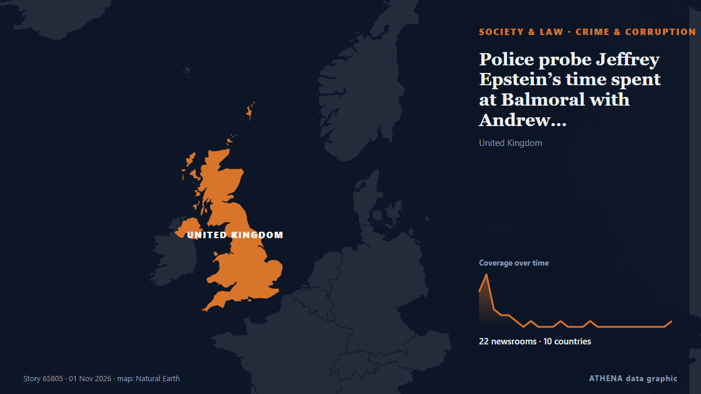

Police probe Jeffrey Epstein’s time spent at Balmoral with Andrew Mountbatten-Windsor

Scottish police are investigating the time convicted sex offender Jeffrey Epstein spent with Andrew Mountbatten-Windsor at Balmoral, a private royal estate in Scotland which is a favored retreat for… de Egypt Independent
Informado de forma independiente por 22 medios de 10 países desde el 30 oct; el primero fue Express Tribune; la cobertura va perdiendo fuerza. ATHENA califica el riesgo como moderado (3.1/10), sobre todo por la gravedad del daño descrito y su alcance geográfico y sectorial. La confianza es del 91 % (alta): lo corroboran 22 medios independientes, con una fiabilidad media de las fuentes del 75 %. Medios por país: Reino Unido (7), Australia (4), Estados Unidos (3). Cobertura: del 30 oct al 1 nov, 53 horas.
Por qué importa: Los cambios legales y de política modifican derechos, obligaciones y servicios públicos para las personas afectadas.
Qué ha cambiado: 2 informaciones nuevas de 2 redacciones en las 24 horas hasta el 1 nov.
Primer titular: Police Scotland say probe into Andrew and Epstein’s Balmoral visit in ‘very early stages’
Los titulares se muestran en inglés, tal como se publicaron.
De un vistazo
Seleccionado, puntuado y redactado por la metodología publicada de ATHENA. Ningún editor interviene en eventos concretos. Cómo se elabora ›
| 30 Oct 08:26 UTC | 6 |
|---|---|
| 30 Oct 10:26 UTC | 9 |
| 30 Oct 12:26 UTC | 3 |
| 30 Oct 14:26 UTC | 2 |
| 30 Oct 16:26 UTC | 2 |
| 30 Oct 18:26 UTC | 1 |
| 30 Oct 20:26 UTC | 0 |
| 30 Oct 22:26 UTC | 1 |
| 31 Oct 00:26 UTC | 0 |
| 31 Oct 02:26 UTC | 0 |
| 31 Oct 04:26 UTC | 0 |
| 31 Oct 06:26 UTC | 1 |
| 31 Oct 08:26 UTC | 0 |
| 31 Oct 10:26 UTC | 0 |
| 31 Oct 12:26 UTC | 0 |
| 31 Oct 14:26 UTC | 1 |
| 31 Oct 16:26 UTC | 0 |
| 31 Oct 18:26 UTC | 0 |
| 31 Oct 20:26 UTC | 0 |
| 31 Oct 22:26 UTC | 0 |
| 01 Nov 00:26 UTC | 0 |
| 01 Nov 02:26 UTC | 0 |
| 01 Nov 04:26 UTC | 0 |
| 01 Nov 06:26 UTC | 0 |
| 01 Nov 08:26 UTC | 0 |
| 01 Nov 10:26 UTC | 0 |
| 01 Nov 12:26 UTC | 1 |
| 30 Oct 10:08 UTC | 0.0 |
|---|---|
| 30 Oct 10:32 UTC | 2.4 |
| 30 Oct 13:05 UTC | 3.4 |
| 01 Nov 13:39 UTC | 3.1 |
Por qué estas cifras
Importancia
Riesgo
Confianza
La cobertura: quién informó y cuándo
titular tal como se publicó · abre el original- Express Tribune · PakistánPolice investigate former Prince Andrew's stays with Epstein, Maxwell at Balmoral
- The Herald (Scotland) · Reino UnidoPolice launch probe into Andrew and Epstein’s Balmoral visit
- The Guardian · Reino UnidoPolice Scotland investigate Jeffrey Epstein and Ghislaine Maxwell’s visit to Balmoral
- Belfast Telegraph · Reino UnidoProbe into Andrew and Epstein’s Balmoral visit in ‘very early stages’ – police
- Evening Standard (London) · Reino UnidoProbe into Andrew and Epstein’s Balmoral visit in ‘very early stages’ – police
- The Canadian Press (via CityNews) · CanadáScottish police conduct inquiries into ex-Prince Andrew and Epstein’s visit to king’s estate
- Anadolu Agency (English) · TurquíaPolice investigate former Prince Andrew's stays with Epstein, Maxwell at Balmoral
- ABC News Australia · AustraliaPolice probe Andrew's stay with Epstein at king's castle
- ProtoThema English ·Scottish police investigate visits by Andrew, Epstein and Maxwell to Balmoral
- ABC News (International) · Estados UnidosPolice probe into ex-Prince Andrew and Epstein's visit to king's estate
- CNA (Channel NewsAsia) · SingapurScottish police probe Andrew, Epstein stay at royal castle: Reports
- Evening Standard (London) · Reino UnidoAndrew Mountbatten-Windsor faces fresh police probe over alleged Epstein trafficking at Balmoral
- Free Malaysia Today · MalasiaScottish police probe Andrew, Epstein stay at royal castle
- Sydney Morning Herald · AustraliaPolice launch inquiry into Andrew and Epstein at royal estate in Scotland
- The New York Times (World) · Estados UnidosPolice Investigate Former Prince Andrew and Epstein’s Time at Balmoral, Royal Estate in Scotland
- The Straits Times · SingapurScottish police probe Britain’s former prince Andrew, Epstein stay at royal castle: Report
- Egypt Independent · EgiptoPolice Scotland Probe alleged human trafficking involving Jeffrey Epstein and former Prince Andrew at Royal estate
- The Herald (Scotland) · Reino UnidoSwinney ‘understands’ concern over allegations relating to Epstein’s Balmoral visit
- Al Jazeera English · CatarPolice in Scotland launch Andrew and Epstein royal castle investigation
- Global News (World) · CanadáScottish police probe ex-prince Andrew and Epstein’s Balmoral visit
- Sydney Morning Herald · AustraliaFormer prince faces new police investigations
- NBC News (World) · Estados UnidosScottish police investigate former Prince Andrew's trip to royal estate with Epstein
- Sydney Morning Herald · AustraliaFormer prince Andrew facing new police probe
- Birmingham Mail · Reino UnidoPolice probe after 'information' over Andrew Mountbatten-Windsor's Balmoral visit with Epstein
- Egypt Independent · EgiptoPolice probe Jeffrey Epstein’s time spent at Balmoral with Andrew Mountbatten-Windsor